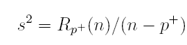
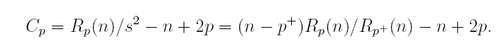
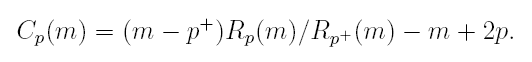
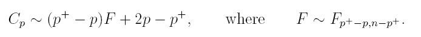
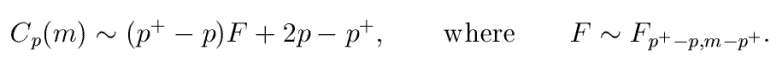

Robust Forward model selection using Cp
In the selection of regression variables σ2 is estimated from a large regression model with n × p+ matrix X+, p+ > p, of which X is submatrix. The unbiased estimator of σ2 comes from regression on all p+ columns of X+ and can be written

Cp is defined as follows:

One derivation of Cp (Mallows 1973) is that it provides an estimate of the mean squared error of prediction at the n observational points from the model with p linear parameters, provided the full model with p+ parameters yields an unbiased estimate of σ2. Then E{Rp(n)} = (n − p)σ2, E(s2) = σ2 and E(Cp) is approximately p.
The Cp criterion for all observations is a function of the residual sums of squares Rp(n) and Rp+(n). For a subset of m observations we can define the forward value of Cp (which we denote Cp(m)) as

For each m we calculate Cp(m) for all models of interest. However, some care is needed in interpreting this definition. For each of the models with p parameters, the search may be different, so that the subset S(m) will depend on which model is being fitted. This same subset is used to calculate Rp+(n), so that the estimate s2 will also depend on the particular model being evaluated as well as on m. Since the searches are for different models, outliers will not necessarily enter in the same order for all models.
It is straightforward to show that the distribution of Cp is
Riani and Atkinson (2010) show that when we consider a subset of size m, the full sample distribution holds with n replaced by m. More specifically: 
so that the only change is in the degrees of freedom of the F distribution
The expression of Cp(m) is the multivariate generalization of the forward added variable t test of Atkinson and Riani (2002). The orthogonality of the distribution to the search can again be shown by the orthogonality of the residuals of added variables. The difference is that now the adjustments using the variables are not restricted to the addition of single terms to the model. It is important to be clear about the similarity of the structure of the forward searches in the two situations. In the calculation of added variable t tests a single search is used for each model and the added variable statistic constructed. Likewise, in the calculation of Cp(m), there is a single search for each model which is used for the calculation of the two sums of squares Rp(m) and Rp+(m). As a consequence the distributional results for Cp(m) are a direct multivariate generalization of those for the t test.
Example 1
In the analysis we use hospital data which had already been used in section Robust Forward Variable Selection using Added t tests. We add other four noise variables to X and perform model selection.
load('hospital.txt');
y1=hospital(:,5);
X=hospital(:,1:4);
% Compute forward added T tests
out=FSRms(y1,[X rand(size(X))],'plots',1)
The candlestick plot shows that the bet model is the one which contains the first 3 explanatory variables.